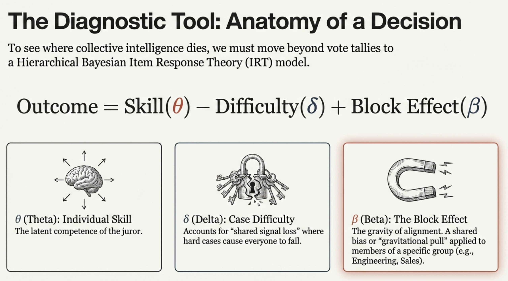
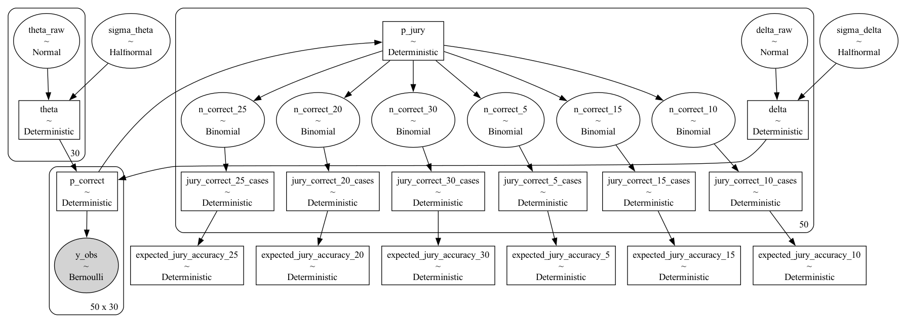
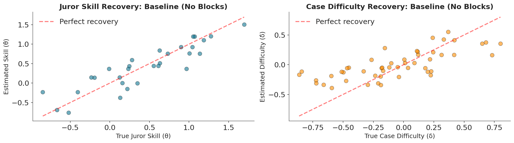
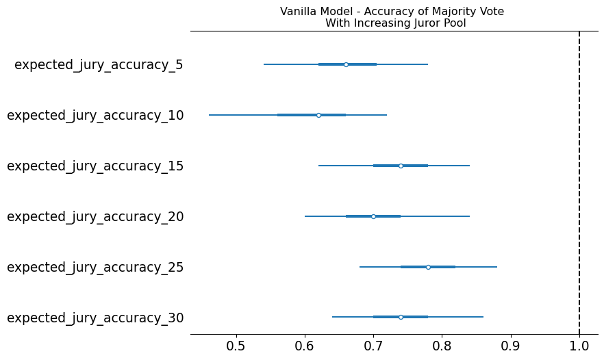
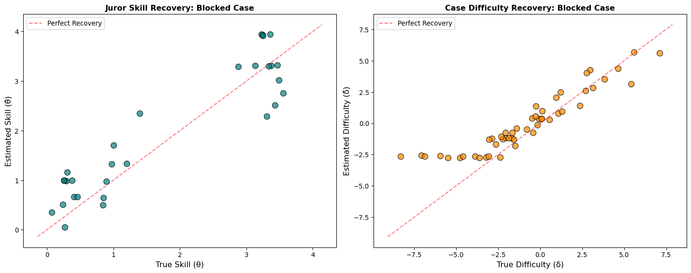
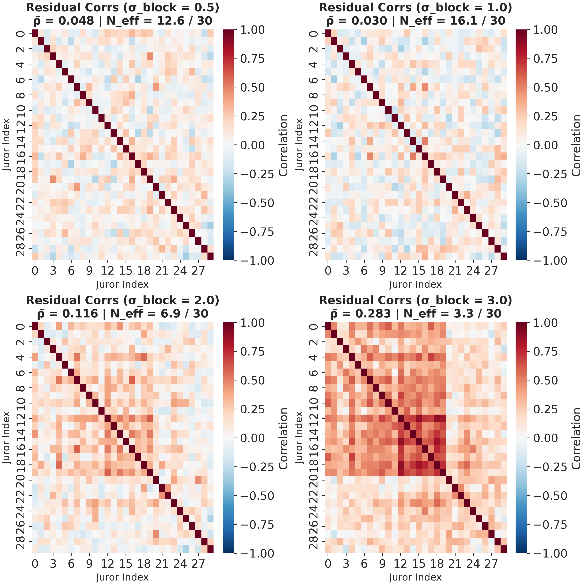
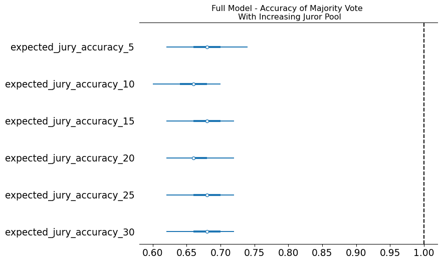

Skill Estimation, Agents and the Condorcet Jury Theorem
Python Ireland Meetup
Data Science @ Personio
and Open Source Contributor @ PyMC
Preliminaries
Who am I?
- I’m a data scientist at Personio
- Bayesian statistician,
- Reformed philosopher and logician.
- Website: https://nathanielf.github.io/
Link to my website
Code or it didn’t Happen
The worked examples used here can be found on my blog
“You don’t have 30 employees.
You have three, rehired ten times.”
The Pitch
How do you know whether your panel of decision-makers is actually working?
Not just “are they accurate?” but:
- Can you separate individual skill from problem difficulty?
- Does adding more agents actually help?
- Are your agents thinking independently — or echoing each other?
Item Response Theory + PyMC gives us a framework to answer all three.
Agenda
- The Condorcet Jury Theorem — when crowds are wise
- Item Response Theory — decomposing decisions into skill, difficulty, and structure
- Building and Fitting the Model — simulation and PyMC
- Three Scenarios — what independent, grouped, and expert agents look like
- Evaluating Agent Collectives — a vocabulary for ensemble diagnostics
Part I: The Promise
The Condorcet Jury Theorem
A group of independent, slightly-better-than-chance decision-makers will converge on the truth as the group grows.
Three assumptions:
- Equal competence — everyone is similarly skilled
- Equal difficulty — all problems are equally hard
- Independence — my errors don’t predict yours
If \(p > 0.5\) and errors are independent, majority accuracy \(\to 1\) as \(N \to \infty\).
Independence is the Engine

When errors are uncorrelated, every new voice adds new evidence.
What Breaks Independence?
Shared training — everyone learned the same frameworks
Shared information — filtered summaries, not raw data
Shared incentives — optimising for the same objectives
Shared tools — the same pipelines, the same priors, the same scaffolding
When agents share structure, their errors correlate. The effective ensemble size collapses.
Part II: From Theorem to Testable Model
The IRT Extension
To stress-test Condorcet, we need a model that captures what the theorem assumes away.
Item Response Theory decomposes each decision into:
\[\text{logit}(p_{ij}) = \underbrace{\theta_j}_{\text{Skill}} - \underbrace{\delta_i}_{\text{Difficulty}} + \underbrace{\beta_{b(j)}}_{\text{Block}} + \underbrace{\tau_j \cdot Z_j}_{\text{Treatment}}\]
Now we can ask: when does adding more agents actually help?
Anatomy of a Decision

Part III: Building the Simulation
Generative Modelling
We build a synthetic decision panel from scratch and stress-test its collective judgment.
How Blocks Compress Skill
# Block effects override individual variance
theta[idx] = (
mu_theta # population mean
+ u_block[b] # block-specific shift
+ kappa * (theta_raw[idx] - mu_theta) # scaled individuality
)
# kappa < 1: groupthink (compresses skill differences)
# kappa > 1: expertise (amplifies skill differences)When \(\kappa \to 0\), everyone in the block becomes interchangeable.
Three Scenarios
# 1. Vanilla — independent agents, no blocks
votes_vanilla = simulate_irt_data(N_CASES, N_JURORS, seed=42)
# 2. Groupthink — correlated blocks, compressed skill
votes_blocked = simulate_irt_data(
N_CASES, N_JURORS,
block_id=BLOCK_ID,
block_type="groupthink_corr",
true_kappa_groupthink=0.2, # heavy compression
seed=43
)
# 3. Expertise + Treatment — can intervention break free?
votes_full = simulate_irt_data(
N_CASES, N_JURORS,
block_id=BLOCK_ID,
block_type="expertise_corr",
treatment=treatment,
true_tau=1.3,
seed=44
)Part IV: Fitting with PyMC
The Bayesian IRT Model
with pm.Model() as model:
# Case difficulty (non-centered)
sigma_delta = pm.HalfNormal("sigma_delta", sigma=0.5)
delta_raw = pm.Normal("delta_raw", mu=0, sigma=1, shape=n_cases)
delta = pm.Deterministic("delta",
sigma_delta * (delta_raw - delta_raw.mean()))
# Juror ability (non-centered)
sigma_theta = pm.HalfNormal("sigma_theta", sigma=1.0)
theta_raw = pm.Normal("theta_raw", mu=0, sigma=1, shape=n_jurors)
theta_base = sigma_theta * theta_rawAdding Block and Treatment Effects
# Block effects — the structural pull
sigma_block = pm.HalfNormal("sigma_block", sigma=1.0)
block_raw = pm.Normal("block_raw", mu=0, sigma=1, shape=n_blocks)
block_effect = sigma_block * (block_raw - block_raw.mean())
theta = theta_base + block_effect[block_id]
# Treatment — the escape velocity
tau_mu = pm.Normal("tau_mu", mu=0, sigma=1)
tau_sigma = pm.HalfNormal("tau_sigma", sigma=1)
tau_raw = pm.Normal("tau_raw", mu=0, sigma=1, shape=n_jurors)
tau = tau_mu + tau_raw * tau_sigma
theta = theta + tau * treatment
# Correlated shock — shared drift within blocks
sigma_gamma = pm.HalfNormal("sigma_gamma", sigma=1.0)
gamma = sigma_gamma * w[:, None] * gamma_raw # scaled by difficultyThe Likelihood
# Core logit: skill - difficulty + block shock
logit_core = theta[None, :] - delta[:, None] + gamma[:, block_id]
# Probability of correctness
p_correct = pm.math.sigmoid(logit_core)
# Observed votes
vote_prob = (true_states[:, None] * p_correct
+ (1 - true_states[:, None]) * (1 - p_correct))
y_obs = pm.Bernoulli("y_obs", p=vote_prob, observed=votes)Then: pm.sample(1000, tune=1000, chains=4)
The Model Structure

Part V: What the Model Reveals
Independent Agents: The Baseline
Parameter Recovery
The model cleanly separates skill from difficulty.
Each agent’s estimated \(\hat{\theta}\) tracks their true \(\theta\).
Error Correlation
White noise — no structure.
30 agents = 30 independent signals.
Independent Agents: Parameter Recovery

Independent Agents: Accuracy Scaling

Grouped Agents: The Collapse
Parameter Recovery
Individual skill is crushed into block identity.
You can’t tell who is skilled — only who belongs.
Error Correlation
Dark red clusters emerge.
\(N_{eff}\) collapses: 30 agents \(\neq\) 30 signals.
Grouped Agents: Parameter Recovery

Grouped Agents: Error Correlation

- Block structure creates persistent correlation.
- The stronger the block effect, the more clustered the errors.
- This is the signature of structural coupling.
Grouped Agents: Does Accuracy Scale?

The Expertise Trap
The expert model has high baseline accuracy but zero scaling.
- Experts are right on the easy cases
- They share the same blind spots on the hard cases
- Treatment (\(\tau\)) can’t overcome the structural pull — you’d need a 6 standard deviation intervention
You are 100% accurate on the trivial, which masks the fact that you’ve lost the ability to solve the complex.
Part VI: A Vocabulary for Agent Evaluation
The IRT Diagnostic Toolkit
Our model gives precise language for evaluating any collective decision system:
| What You Want to Know | What to Measure |
|---|---|
| Is this agent skilled or lucky? | Individual \(\theta\) vs case difficulty \(\delta\) |
| Are my agents genuinely diverse? | Error correlation heatmap, \(N_{eff}\) |
| Does my ensemble scale? | Relative log-odds gain by panel size |
| Is alignment helping or hurting? | Block effect \(\beta\) vs individual variance |
| Can intervention restore independence? | Treatment sensitivity \(\tau\) vs accuracy |
The Design Principle
Independence is not a default. It is a design choice.
For any ensemble:
- Measure \(N_{eff}\), not headcount
- Diagnose shared failure modes — they reveal structural coupling
- Accuracy that doesn’t scale with panel size is a warning sign
For your own work:
- Stress-test your priors — if your conclusions are sensitive to your starting assumptions, you haven’t learned enough from the data
- Diversity of method matters more than diversity of opinion
“Collective wisdom is not a gift of scale.
It is an achievement of independence.”
Skill Estimation with IRT and PyMC